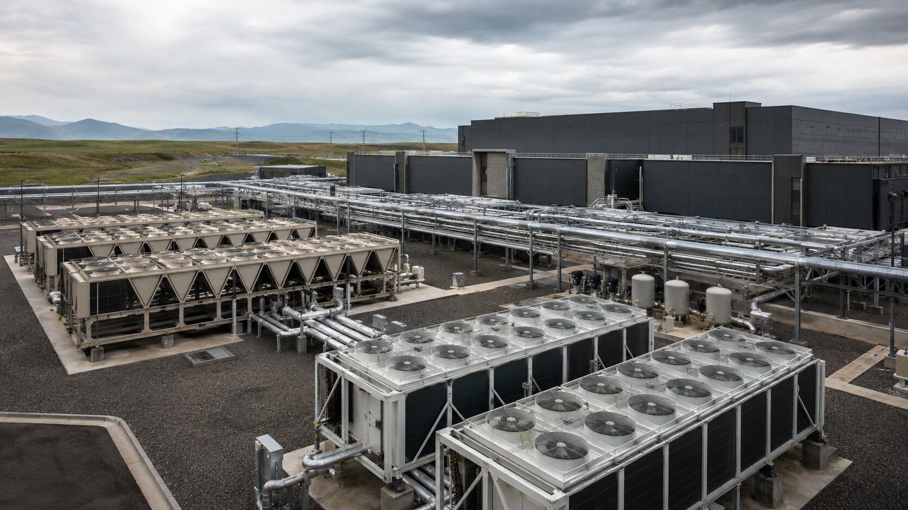
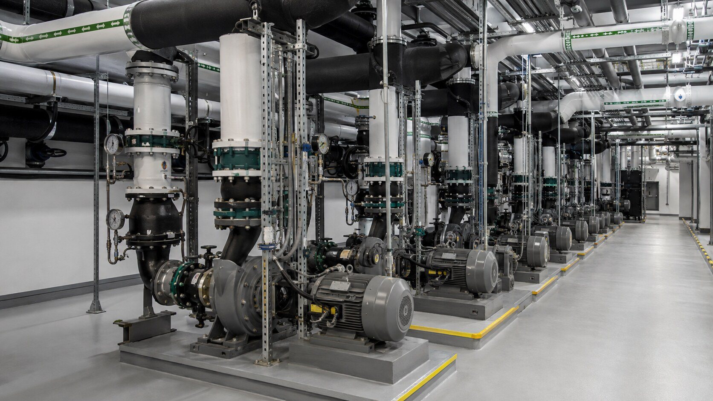
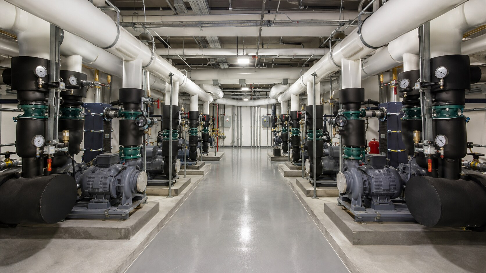

Central chiller plants
Chillers, pumps, hydronic accessories, distribution headers, equipment connections, and commissioning coordination.
Mission-critical cooling
A focused delivery team for data center chiller plants, hydronic distribution, heat-rejection systems, and the equipment-to-piping interfaces that cannot afford coordination gaps.
Discuss your project →
Data center focus
Data center cooling work is not ordinary mechanical construction. Every decision must account for system topology, future capacity, isolation, active operations, quality records, controls integration, and the turnover sequence.
Equipment capacity, hydronic topology, isolation boundaries, piping routes, controls interfaces, testing, and commissioning milestones are coordinated around the facility’s uptime requirements and expansion plan.


Critical cooling applications
Chillers, pumps, hydronic accessories, distribution headers, equipment connections, and commissioning coordination.
Primary/secondary loops, redundant paths, isolation strategy, CDUs, and equipment branch connections.
Cooling-tower, dry-cooler, and condenser-water systems coordinated from equipment through piping.
Repeatable equipment and piping packages that support phased capacity and future buildout.
Detailed MOP-aligned planning, prefabrication, isolation, outage control, and sequenced tie-ins.
System verification, startup readiness, punch completion, quality documentation, and commissioning support.
Execution priorities
Redundancy and isolation boundaries
✓Capacity phasing and future expansion
✓Live-facility work controls
✓Material and weld traceability
✓Controls and commissioning sequence
✓Clear, complete turnover packages
✓Equipment · controls · commissioning
Fabrication · installation · tie-ins
Bring us in early
We can evaluate redundancy, isolation, phased capacity, equipment lead times, prefabrication opportunities, live-site constraints, and the turnover sequence before construction begins.
Start the conversation →